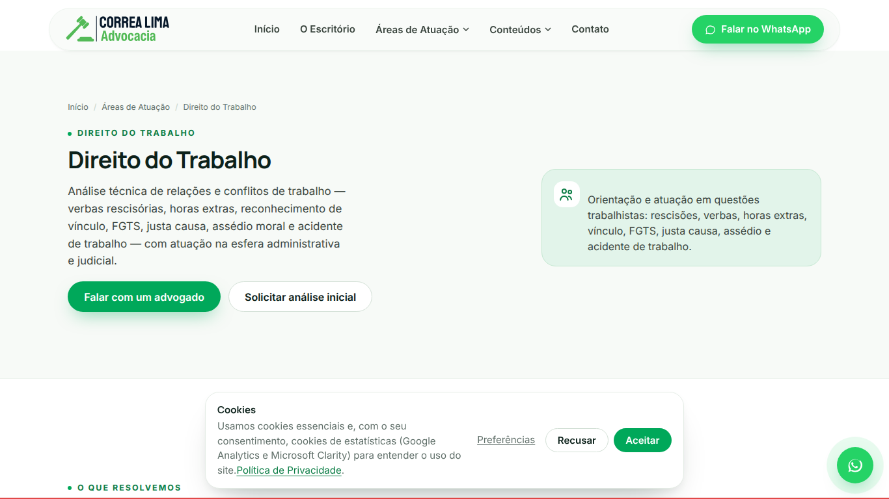
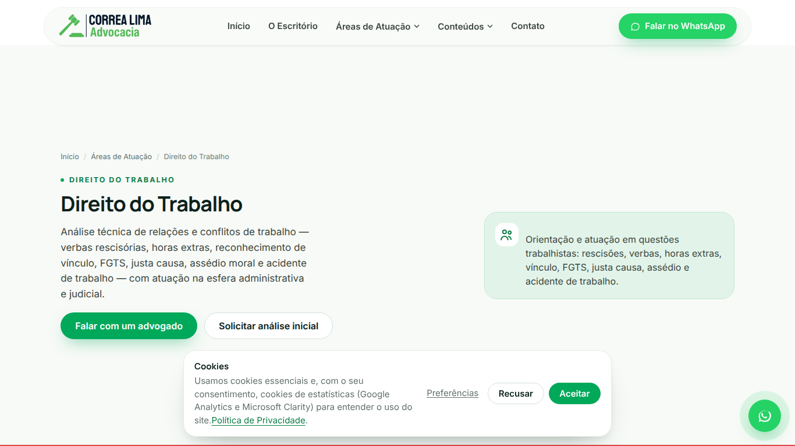
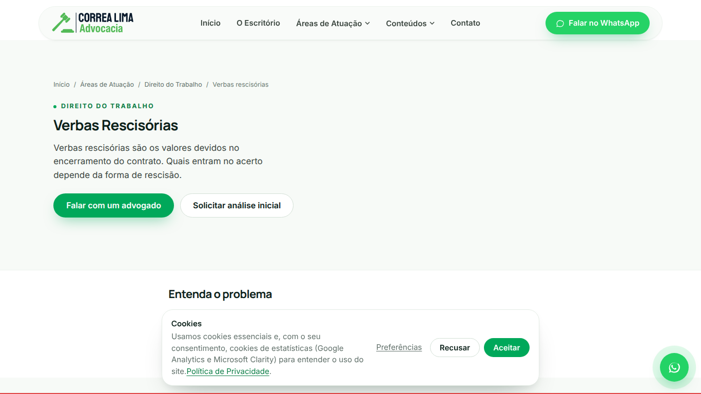
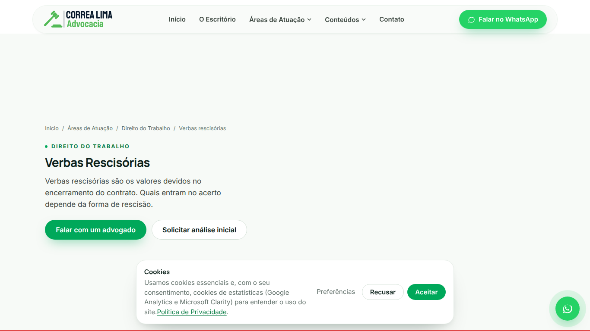
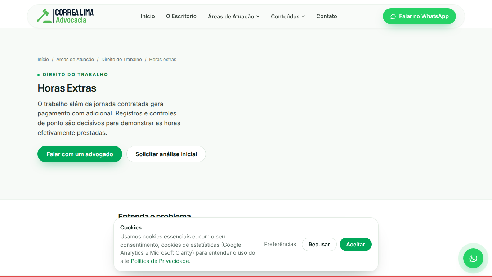
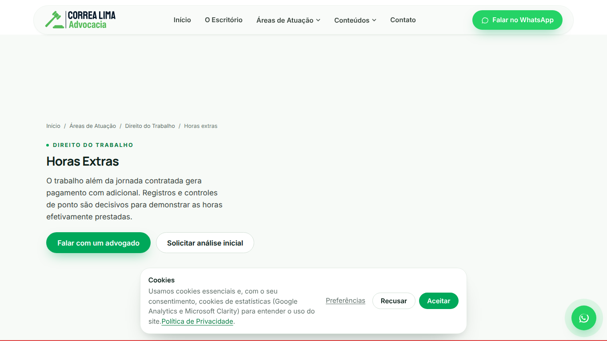
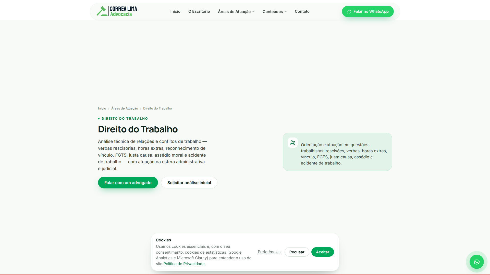

Padronização da primeira dobra das páginas internas
A transição herói → seção seguinte passou de 142–541 px acima da dobra (média 302 px) para 0 px em todas as resoluções de desktop. Home idêntica pixel a pixel. Build limpo, zero overflow horizontal.
1. Causa técnica
A altura do herói de PillarPage (.p-hero) e SubPage (.s-hero) vinha só de padding, variando com título, descrição, card lateral e largura — a transição nunca caía na dobra. Uma tentativa anterior esticou o herói à viewport mas deixou o conteúdo colado ao topo, gerando ~380 px de faixa vazia (documentado em areas-hero.css). O cabeçalho é position: sticky (no fluxo) e sua borda inferior fica a 78 px do topo em qualquer largura; o token --header-height dizia 76 px — corrigido para 4.875rem (78 px).
2. Solução — uma regra única e reutilizável
.internal-first-fold { box-sizing: border-box; }
@media (min-width: 900px) {
.internal-first-fold {
display: flex; flex-direction: column;
justify-content: center; /* distribui — sem faixa vazia */
min-height: calc(100vh - var(--header-height)); /* fallback */
min-height: calc(100svh - var(--header-height)); /* atual */
}
}
- min-height (não height): conteúdo maior que a dobra faz a seção crescer — nada é cortado.
- justify-content: center: conteúdo distribuído — sem a faixa vazia da tentativa anterior; pilar (com card) e sub (sem card) terminam no mesmo ponto.
- ≥ 900px: no mobile/tablet-retrato o herói cresce pelo conteúdo, respeitando barras dinâmicas, sem cortes.
3. Arquivos alterados
| Arquivo | Mudança |
|---|---|
src/styles/first-fold.css | NOVO — regra .internal-first-fold. |
src/styles/tokens.css | --header-height: 4.75rem → 4.875rem (real). |
src/layouts/BaseLayout.astro | import de first-fold.css. |
src/components/PillarPage.astro | classe no .p-hero + padding simétrico. |
src/components/SubPage.astro | classe no .s-hero + padding simétrico. |
Sem !important, sem JavaScript, sem CSS por URL, sem editar o dist como fonte.
4. Inventário — página × template × decisão
| Template | 1ª seção | Páginas | Regra da dobra |
|---|---|---|---|
| PillarPage.astro | .p-hero | 7 | Aplicada ✅ |
| SubPage.astro | .s-hero | 41 | Aplicada ✅ |
| ContentIndex (blog/guias/assuntos/ferramentas + LP) | .cx-hero | 5 | Não forçada* |
| AreasIndex | .areas-head | 1 | Não forçada* |
| EntryPage (blog, guias, áreas secundárias) | .entry | 94 | Não se aplica* |
| Institucional | .inst | 5 | Não se aplica* |
| Ferramentas | .tool | 3 | Não se aplica* |
| Contato | .contato | 1 | Não se aplica* |
| Home | — | 1 | Excluída — intocada 🔒 |
* Listagens têm grade de cards logo abaixo do herói: esticá-lo esconderia os cards (regressão). Artigos/prosa/ferramenta/contato não têm a transição herói-claro → seção. Aplicou-se a regra aos 48 heróis-banda (pilar + sub, que incluem 100% das páginas do teste obrigatório) e respeitou-se o mesmo princípio, sem esconder conteúdo, nos demais.
5. Resultados por resolução (páginas-alvo)
| Resolução | Amostras | foldGap mín | máx | média | Overflow X |
|---|---|---|---|---|---|
| 1920 × 1080 | 19 | 0,00 | 0,00 | 0,00 | 0 |
| 1600 × 900 | 19 | 0,00 | 0,00 | 0,00 | 0 |
| 1440 × 900 | 19 | 0,00 | 0,00 | 0,00 | 0 |
| 1366 × 768 | 19 | 0,00 | 0,00 | 0,00 | 0 |
| 1280 × 720 | 19 | 0,00 | 0,00 | 0,00 | 0 |
| 1024 × 768 | 19 | 0,00 | 0,00 | 0,00 | 0 |
| 768 × 1024 mobile | 19 | 416 | 594 | 524 | 0 |
| 390 × 844 mobile | 19 | 104 | 324 | 247 | 0 |
| 360 × 800 mobile | 19 | 38 | 282 | 190 | 0 |
Desktop: transição na dobra (0 px). Mobile/tablet-retrato: herói cresce naturalmente (foldGap positivo), sem cortes nem overflow.
6. Home — confirmação (pixel a pixel)
Fonte antes × depois das alterações, com animações neutralizadas: 0 pixels de diferença em 1366×768, 1920×1080 e 390×844.

7. Antes × Depois (linha vermelha = base da viewport)
Página-pilar — Direito do Trabalho (1366 × 768)


Subpágina — Verbas Rescisórias (1366 × 768)


Subpágina — Horas Extras (1366 × 768)


Tela alta — 1920 × 1080 (depois)

8. Publicação
Faça backup do public_html, envie o conteúdo de correalima-public_html.zip para a raiz do public_html e limpe o cache. Para recompilar: npm install + npm run build.